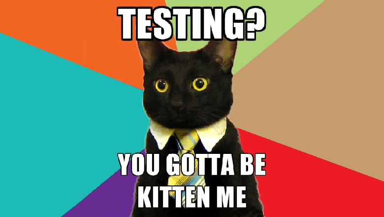

When developing a swarm of agents, the question of unit testing arises. A swarm of agents allows the use of different LLMs, with the selection of another active model based on user actions. As a result, any agent from the swarm can handle identical correspondence. For example, if a Redis FLUSHALL is executed and the active agent is lost, the chat continues with the root Triage agent.

Without tests, there is no technical way to catch rare model states where, in 8 out of 10 cases, the model behaves correctly, but in the remaining two, it produces utter nonsense—for example, spontaneously deciding to greet the user again. This is a consequence of the mathematical model, where response diversity is ensured by the seed and temperature variables.
Moreover, without tests, it’s impossible to verify a prompt engineer’s work: how do we know if they actually tested their prompts? Prompts aren’t code, so static analysis is useless. It’s also a good way to catch cringe test open-source models for production readiness. In theory, offloading small talk to a local model could save money, but currently, they hallucinate too much.
For invoked tools, it’s essential to test that the model actually calls external APIs rather than generating a text placeholder like payment completed successfully.
import { Chat, commitToolOutput, emit, getAgentName, overrideSwarm, overrideTool } from "agent-swarm-kit";
import { randomString } from "functools-kit";
import { test } from "worker-testbed";
import { AgentName, SwarmName, ToolName } from "@modules/remote-lib";
const CLIENT_ID = `test-client-id-${randomString()}`;
test("RU: Topping up a Troika card upon user request", async (t) => {
let isCalled = false;
/**
* Language models store user preferences in the system prompt
* This also needs to be covered by tests
*/
overrideAgent({
agentName: AgentName.TroikaPaymentToolRu,
systemDynamic: async (clientId: string) => {
return [`The last time the user topped up the Troika card with 300 rubles`];
},
});
overrideTool({
toolName: ToolName.TroikaPaymentToolRu,
call: async ({ toolId, clientId, agentName, params }) => {
if (params.amount === "200") {
isCalled = true;
await commitToolOutput(toolId, "Ok", clientId, agentName);
await emit("Ok", clientId, agentName);
}
}
});
await Chat.sendMessage(CLIENT_ID, "I want to top up my Troika card with 200 rubles", SwarmName.RootSwarmRu);
if (isCalled) {
t.pass("Troika card top-up tool was successfully called");
} else {
t.fail("Troika card top-up tool was not called");
}
});
For string parameters like enum, it’s critical to test that the model takes the value from the conversation rather than the first parameter from the tool’s declaration.
import { Chat, commitToolOutput, emit, getAgentName, overrideSwarm, overrideTool } from "agent-swarm-kit";
import { randomString } from "functools-kit";
import { test } from "worker-testbed";
import { AgentName, SwarmName, ToolName } from "@modules/remote-lib";
const CLIENT_ID = `test-client-id-${randomString()}`;
test("RU: Mosenergo electricity payment will return an error without specifying the district", async (t) => {
let isCalled = false;
overrideTool({
toolName: ToolName.MosenergoPaymentToolRu,
call: async ({ toolId, clientId, agentName, params }) => {
// If the model provided any district (district is defined), the test should fail
if (params.district) {
isCalled = true; // Tool was called with a district, which shouldn’t happen
} else if (params.amount === "200") {
isCalled = false; // TODO: District not specified, tool shouldn’t be called. Nemotron Mini on Ollama
}
}
});
await Chat.sendMessage(CLIENT_ID, "I want to pay 200 rubles for Mosenergo electricity", SwarmName.RootSwarmRu);
if (isCalled) {
t.fail("Mosenergo electricity payment tool was called with an assumed district");
} else {
t.pass("Mosenergo electricity payment tool was not called, as expected");
}
});
A swarm of agents implies a router—a triage agent. This agent’s task is to arbitrate which target agent, from those available in the state, can handle the user’s request. The child agent performs a detailed analysis of what needs to be done. If it can’t handle the request, it redirects back to the triage agent. If the agents’ prompts are not precise enough, recursive navigations will occur.
import { Chat, getAgentName, overrideSwarm } from "agent-swarm-kit";
import { randomString } from "functools-kit";
import { test } from "worker-testbed";
import { AgentName, SwarmName } from "@modules/remote-lib";
const CLIENT_ID = `test-client-id-${randomString()}`;
test("RU: Transition from Mosvodokanal water agent to triage agent upon request", async (t) => {
overrideSwarm({
swarmName: SwarmName.RootSwarmRu,
getActiveAgent: async () => AgentName.WaterAgentRu,
});
await Chat.sendMessage(CLIENT_ID, "Redirect me to the triage agent", SwarmName.RootSwarmRu);
const lastAgent = await getAgentName(CLIENT_ID);
if (lastAgent === AgentName.TriageAgentRu) {
t.pass("Mosvodokanal water agent successfully transitioned to triage agent");
} else {
t.fail("Mosvodokanal water agent failed to transition to triage agent");
}
});